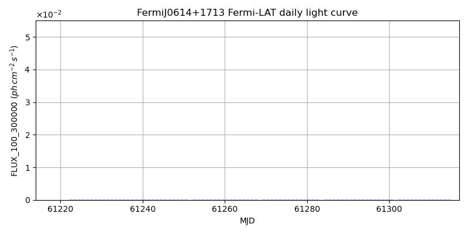
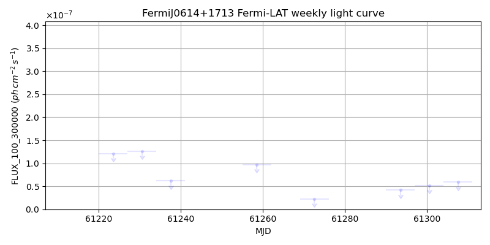
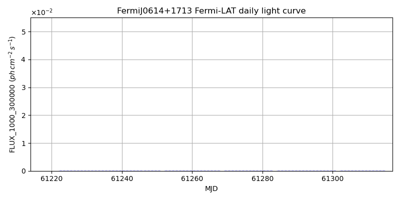
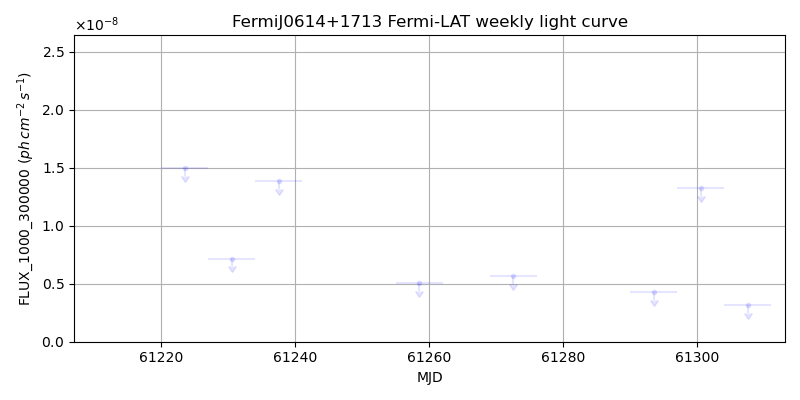

LAT Lightcurve site: https://fermi.gsfc.nasa.gov/ssc/data/access/lat/msl_lc/source/Fermi_J0614p1713
NED: Query
Time of last update of this page: UT: 2026-10-02 15:17 (MJD: 61315.637)
| Property | Value |
|---|---|
| R.A. | 6:14:31.20 |
| Dec. | 17:13:48.0 |
| z | 0.000 |
| 3FGL SpectrumType | |
| 3FGL PL Index | -1.00 |
| 3FGL Flux_100_300000 | -1.00e+00 |
| 3FGL Flux_1000_300000 | -1.00e+00 |
| 3FGL Flux >200 GeV | -1.00e+00 |
| 3FGL Extrap. Crab >200 GeV | -1.00 |
| 3FGL Flux After EBL Absorption >200GeV | -1.00e+00 |
| 3FGL EBL Crab Fraction >200GeV | -1.00 |

| MJD | dMJD | Flux | dFlux | Frac3FGL | FracCrab>200GeV | EBLFracCrab>200GeV |
|---|---|---|---|---|---|---|
| 61310.50 | 0.50 | 4.57e-07 | 0.00e+00 | 0.00 | 0.00 | -0.00 |
| 61311.50 | 0.50 | 1.88e-07 | 0.00e+00 | 0.00 | 0.00 | -0.00 |
| 61312.50 | 0.50 | 4.34e-07 | 0.00e+00 | 0.00 | 0.00 | -0.00 |
| 61313.50 | 0.50 | 7.98e-07 | 0.00e+00 | 0.00 | 0.00 | -0.00 |
| 61314.50 | 0.50 | 8.00e-08 | 0.00e+00 | 0.00 | 0.00 | -0.00 |

| MJD | dMJD | Flux | dFlux | Frac3FGL | FracCrab>200GeV | EBLFracCrab>200GeV |
|---|---|---|---|---|---|---|
| 61258.50 | 3.50 | 9.74e-08 | 0.00e+00 | 0.00 | 0.00 | -0.00 |
| 61272.50 | 3.50 | 2.28e-08 | 0.00e+00 | 0.00 | 0.00 | -0.00 |
| 61293.50 | 3.50 | 4.19e-08 | 0.00e+00 | 0.00 | 0.00 | -0.00 |
| 61300.50 | 3.50 | 5.19e-08 | 0.00e+00 | 0.00 | 0.00 | -0.00 |
| 61307.50 | 3.50 | 5.95e-08 | 0.00e+00 | 0.00 | 0.00 | -0.00 |

| MJD | dMJD | Flux | dFlux | Frac3FGL | FracCrab>200GeV | EBLFracCrab>200GeV |
|---|---|---|---|---|---|---|
| 61310.50 | 0.50 | 3.84e-08 | 0.00e+00 | 0.00 | 0.00 | -0.00 |
| 61311.50 | 0.50 | 2.21e-08 | 0.00e+00 | 0.00 | 0.00 | -0.00 |
| 61312.50 | 0.50 | 1.81e-08 | 0.00e+00 | 0.00 | 0.00 | -0.00 |
| 61313.50 | 0.50 | 4.14e-08 | 0.00e+00 | 0.00 | 0.00 | -0.00 |
| 61314.50 | 0.50 | 2.71e-08 | 0.00e+00 | 0.00 | 0.00 | -0.00 |

| MJD | dMJD | Flux | dFlux | Frac3FGL | FracCrab>200GeV | EBLFracCrab>200GeV |
|---|---|---|---|---|---|---|
| 61258.50 | 3.50 | 5.04e-09 | 0.00e+00 | 0.00 | 0.00 | -0.00 |
| 61272.50 | 3.50 | 5.63e-09 | 0.00e+00 | 0.00 | 0.00 | -0.00 |
| 61293.50 | 3.50 | 4.27e-09 | 0.00e+00 | 0.00 | 0.00 | -0.00 |
| 61300.50 | 3.50 | 1.32e-08 | 0.00e+00 | 0.00 | 0.00 | -0.00 |
| 61307.50 | 3.50 | 3.18e-09 | 0.00e+00 | 0.00 | 0.00 | -0.00 |
--------------------------------------------------------- Using user-supplied coords: 6:14:31.20 17:13:48.0 2000 --------------------------------------------------------- FLWO UT night of: 2026-10-03 Local Sid. @ Midnight: 00:24 Sunset (-15.0) (local, UT): 19:14 02:14 Sunrise (-15.0) (local, UT): 05:12 12:12 Moonrise (local, UT): 22:48 05:48 Moonset (local, UT): Moon phase: 0.53 --------------------------------------------------------- AzTime LSID UT Obj_el Obj_az Mn_el Mn_az Sep. --------------------------------------------------------- 19:14 19:37 02:14 -37.4 24.6 -28.5 20.1 9.6 19:44 20:07 02:44 -34.3 32.6 -26.2 26.7 9.6 20:14 20:37 03:14 -30.5 39.9 -23.2 32.8 9.7 20:44 21:07 03:44 -26.1 46.4 -19.6 38.5 9.7 21:14 21:37 04:14 -21.3 52.1 -15.7 43.6 9.8 21:44 22:07 04:44 -16.1 57.3 -11.3 48.4 9.9 22:14 22:37 05:14 -10.5 62.1 -6.5 52.7 10.0 22:44 23:07 05:44 -3.7 66.4 -0.8 56.7 10.1 23:14 23:37 06:14 1.5 70.4 3.8 60.4 10.3 23:44 00:07 06:44 7.4 74.2 9.1 63.9 10.4 00:14 00:38 07:14 13.6 77.9 14.6 67.1 10.5 00:44 01:08 07:44 19.8 81.5 20.3 70.2 10.7 01:14 01:38 08:14 26.2 85.1 26.1 73.1 10.8 01:44 02:08 08:44 32.6 88.9 32.1 76.0 10.9 02:14 02:38 09:14 39.0 92.9 38.1 78.8 11.1 02:44 03:08 09:44 45.3 97.4 44.2 81.7 11.2 03:14 03:38 10:14 51.6 102.6 50.3 84.8 11.3 03:44 04:08 10:44 57.8 109.0 56.5 88.1 11.4 04:14 04:38 11:14 63.7 117.5 62.7 91.9 11.5 04:44 05:08 11:44 69.0 129.5 68.9 96.9 11.6 05:12 05:37 12:12 73.1 146.5 74.7 103.8 11.7 --------------------------------------------------------- Dark hours >55 deg.: 0.00